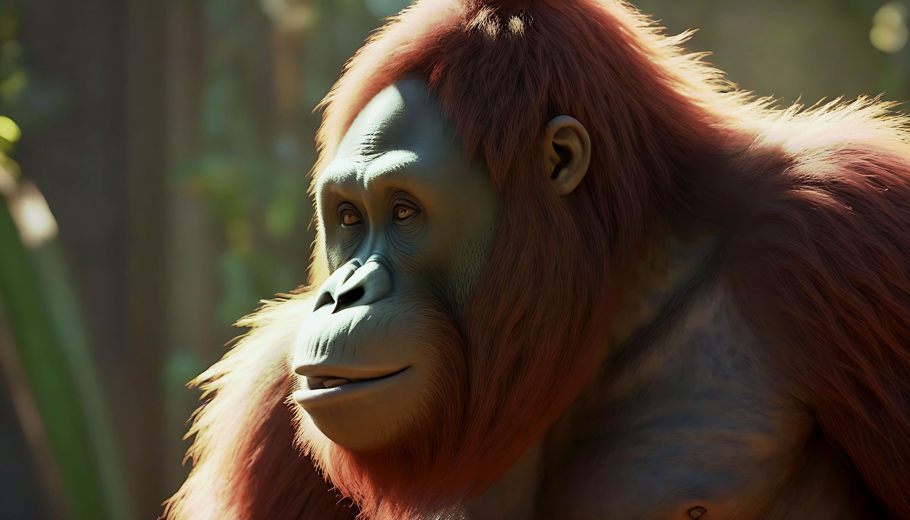
Orangutan
Orangutans are great apes native to the rainforests of Indonesia and Malaysia. The orangutan is one of humankind’s closest relatives – in fact, we share nearly 97% of the same DNA! The word orangutan comes from the Malay words “orang hutan“, meaning “human of the forest“.
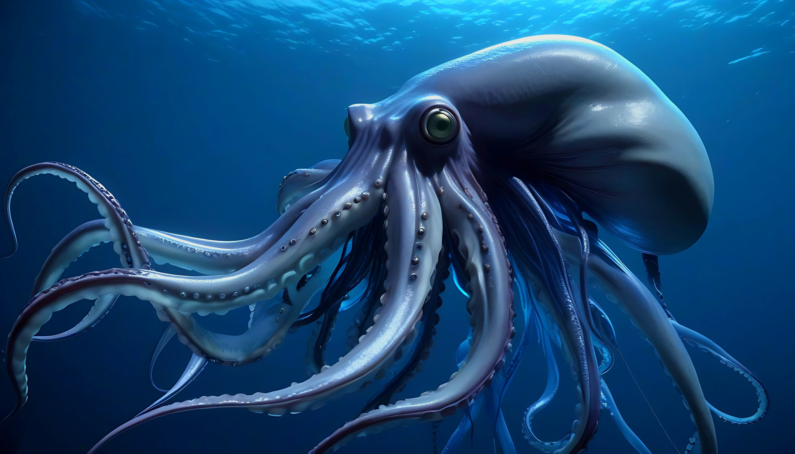
Giant squid
The giant squid is a species of deep-ocean dwelling squid. It can grow to a tremendous size, around 12–13 m for females and 10 m for males.
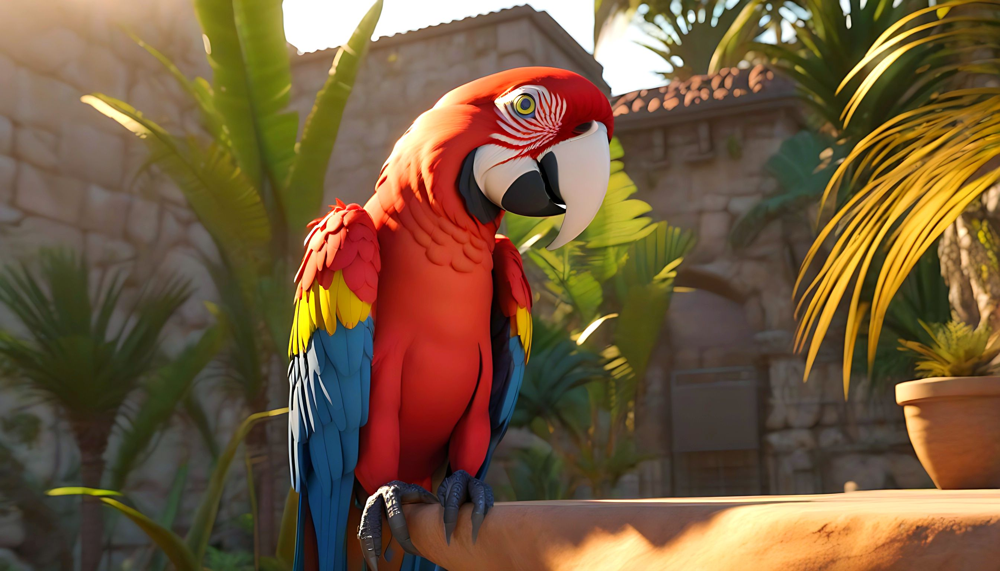
Macaw
Macaws are a group of New World parrots that are long-tailed and often colorful. Unlike the vast majority of animals, once macaws find a mate, they tend to stay together for the rest of their lives.
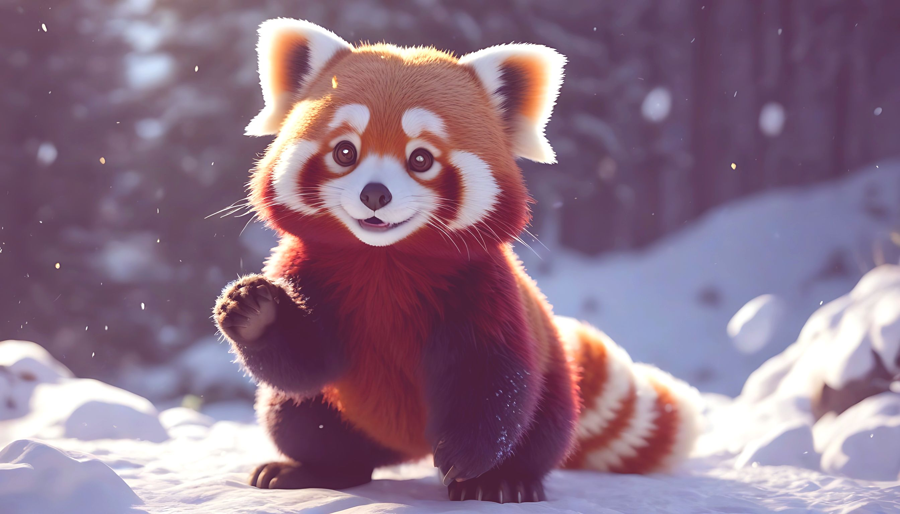
Red panda
The red panda, also known as the lesser panda, is a small mammal native to the eastern Himalayas and southwestern China. It has dense reddish-brown fur with a black belly and legs, white-lined ears, a mostly white muzzle and a ringed tail.
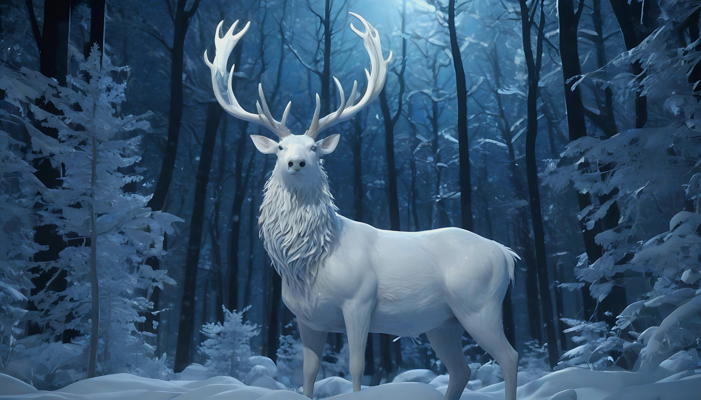
White stag
A white stag is a white-colored red deer, wapiti, sika deer, chital, fallow deer, roe deer, white-tailed deer, black-tailed deer, reindeer, moose, or rusa, explained by a condition known as leucism that causes its hair and skin to lose its natural colour.
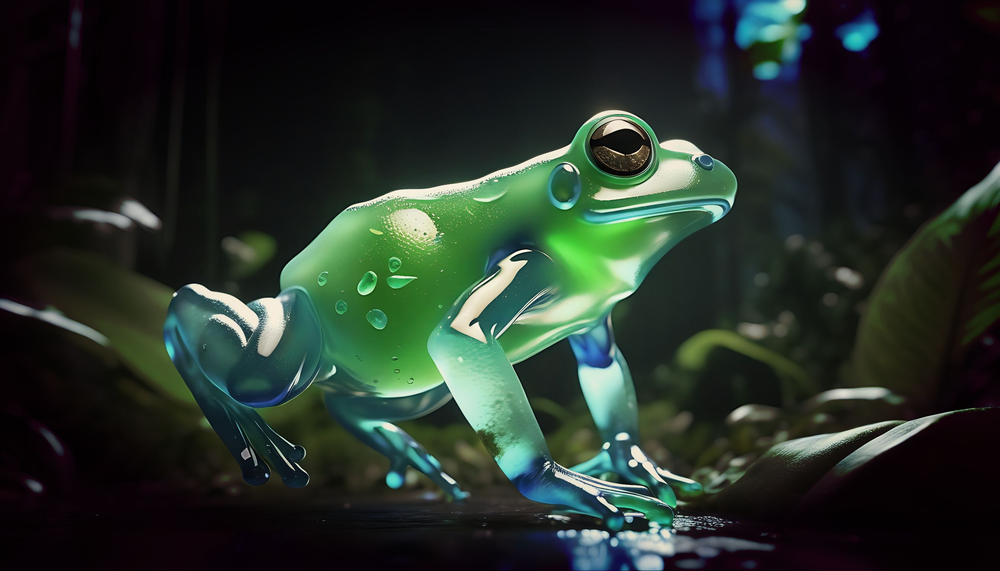
Glass frog
Glass frogs are one of the best examples of animal transparency in nature. The skin on their backs is typically a bright lime green, while their bones, intestines, heart, and other organs are visible through their underbelly.
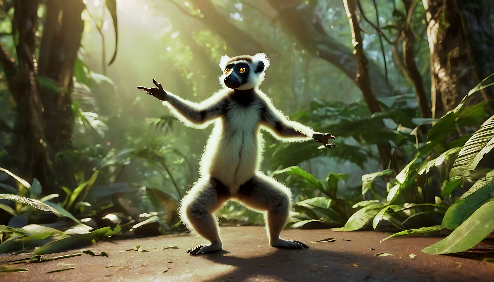
Lemur
Lemurs are the world’s oldest living primates. Besides humans, lemurs are one of the only primates that have blue eyes.
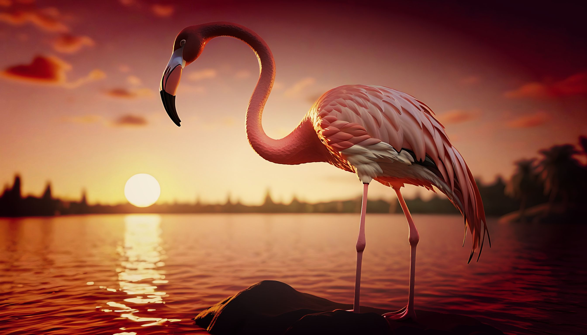
Flamingo
Flamingos are one of the most exotic-looking birds in the animal kingdom. Flamingos usually pose with one foot tucked under their bodies. A theory suggests that they do it to conserve body heat in the cold water of their feeding areas, but it has not been confirmed.
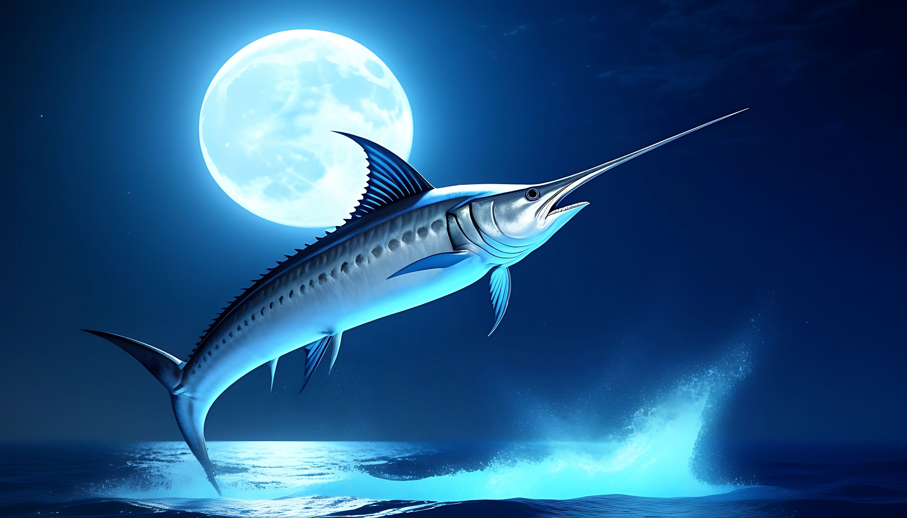
Swordfish
Swordfish, also known as broadbills in some countries, are large, highly migratory predatory fish characterized by a long, flat, pointed bill. They are fearsome predators, but they have no teeth.
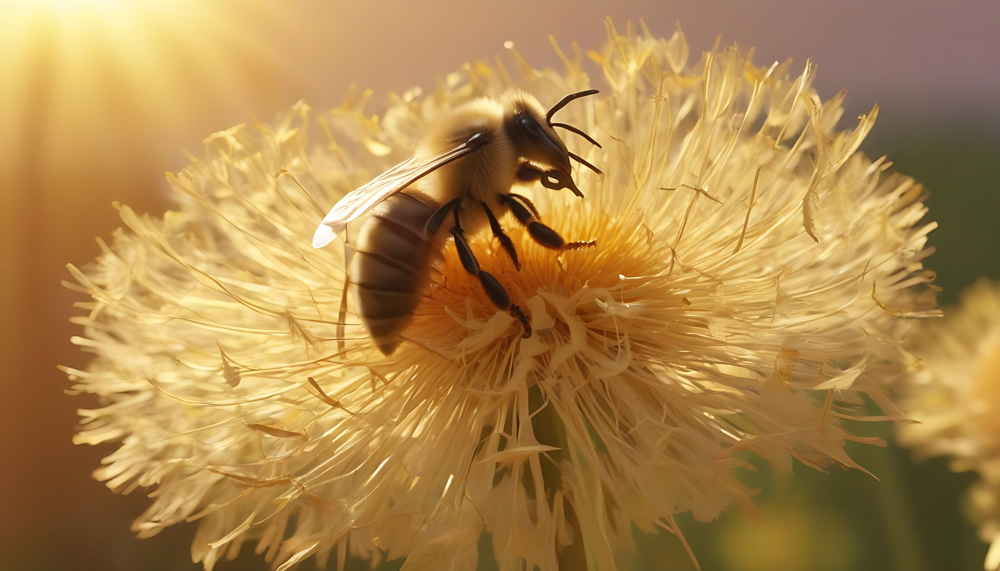
Bee
Bees are winged insects closely related to wasps and ants, known for their roles in pollination and, in the case of the best-known bee species, the western honey bee, for producing honey. A single bee can produce 1 tablespoon of honey in its lifetime.
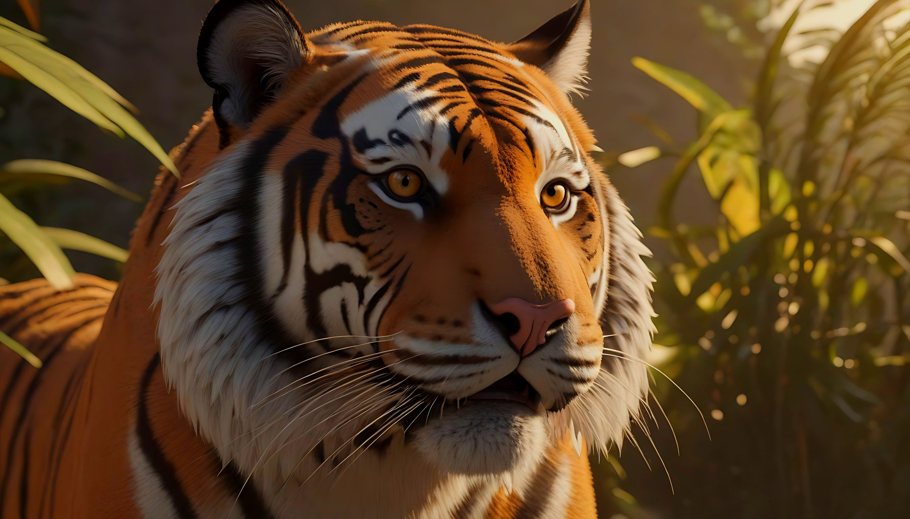
Tiger
The tiger is the largest living cat species. It is most recognisable for its dark vertical stripes on orange fur with a white underside. There are more tigers in captivity than there are in the wild. Tigers are endangered.
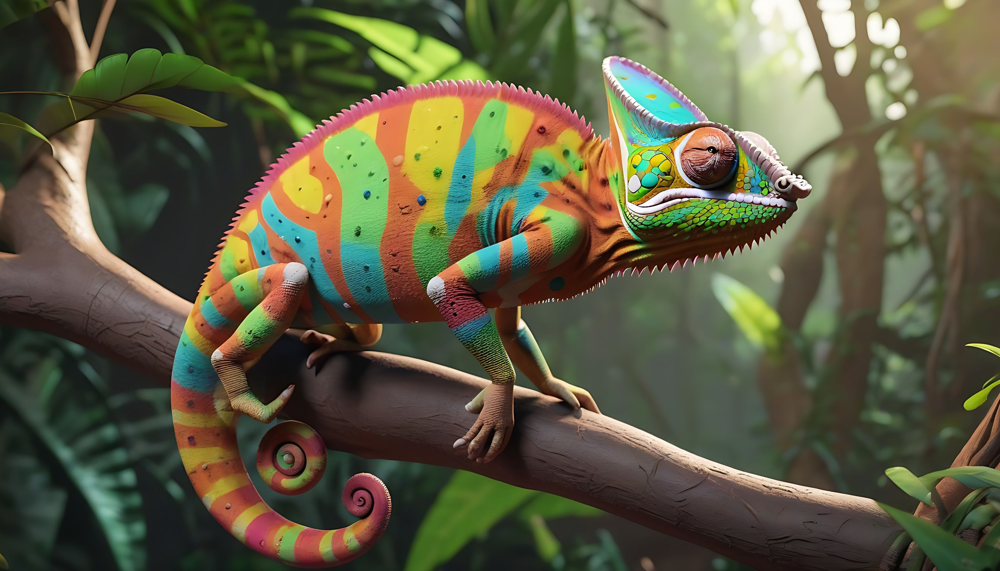
Chameleon
Chameleons are one of the most interesting lizards to learn about within the reptile species. Chameleons are known for their bulging eyes and their ability to change color.
{kind=link}
{kind=link}
{kind=link}
{kind=link}
{kind=link}
{kind=link}
{kind=link}
{kind=link}
{kind=link}
{kind=link}
{kind=link}
{kind=link}